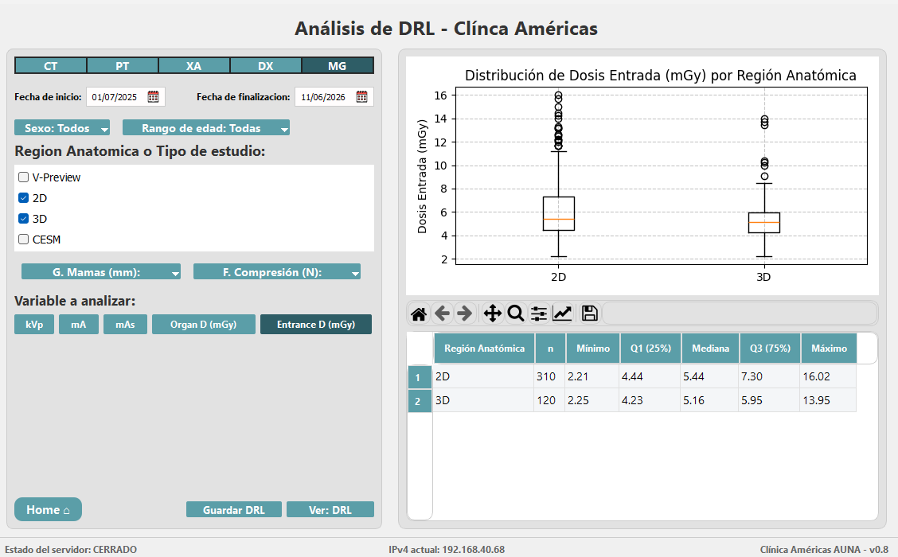

Sistemas de control de calidad, análisis de dosis, protección radiológica y herramientas de imagen médica — desarrollados por ingenieros que entienden tanto la tecnología como la física médica.
Desde sistemas de QA hasta análisis continuo de dosis, cubrimos toda la pila tecnológica del software médico especializado.
Plataformas de QA que automatizan cálculos de prueba, centralizan flujos de trabajo por equipo y generan reportes firmados con un solo clic.
Conexión directa a PACS y bases de datos locales para extracción continua de parámetros de dosis y optimización basada en los estándares DRL internacionales.
Gestión integral de equipos, dosimetría del personal ocupacionalmente expuesto y alertas automáticas de vencimiento de controles de calidad.
Herramientas que se conectan directamente a su infraestructura DICOM existente para extraer, analizar y visualizar datos de estudios imagenológicos.
Algoritmos asistidos de análisis de imagen para medición automática de unidades Hounsfield, con posibilidad de corrección manual por el usuario.
Aplicaciones web a medida para flujos de trabajo clínicos: gestión de formularios, control de acceso por rol, registros inmutables y reportes automáticos.
Plataforma centralizada de QA para todas las modalidades de radiodiagnóstico y medicina nuclear.
Herramienta conectada al PACS institucional para monitoreo continuo de dosis y optimización frente a estándares DRL internacionales.

"Su profundo conocimiento tanto del dominio médico como de la tecnología marcó toda la diferencia."
"Entrega rápida, comunicación excelente y resultados que mejoraron genuinamente nuestro flujo de trabajo."
"El sistema de QA automatizado redujo el tiempo de nuestros controles de calidad a la mitad."
Cuéntanos sobre tu proyecto y te respondemos en menos de 24 horas.
Agendar una Llamada Gratis